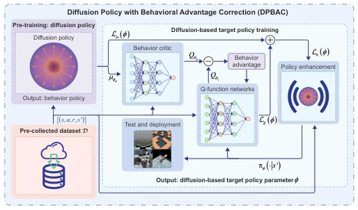
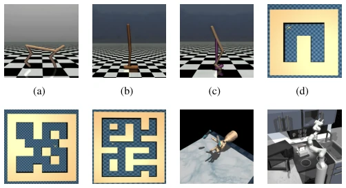
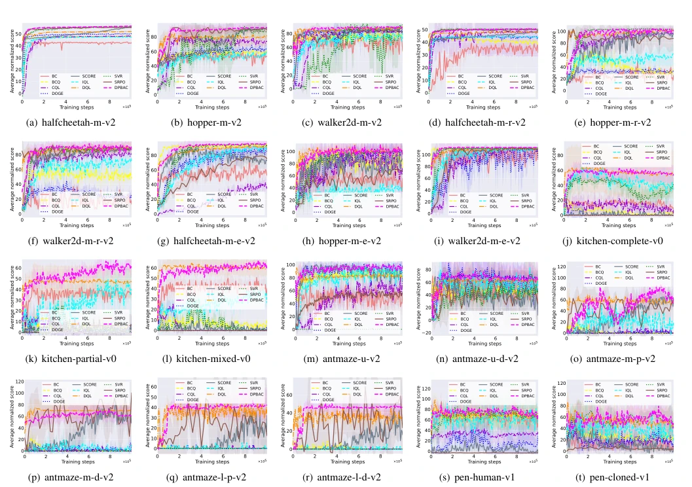
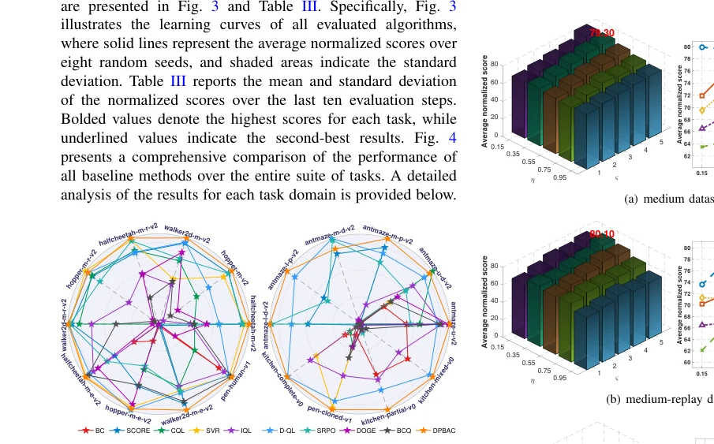
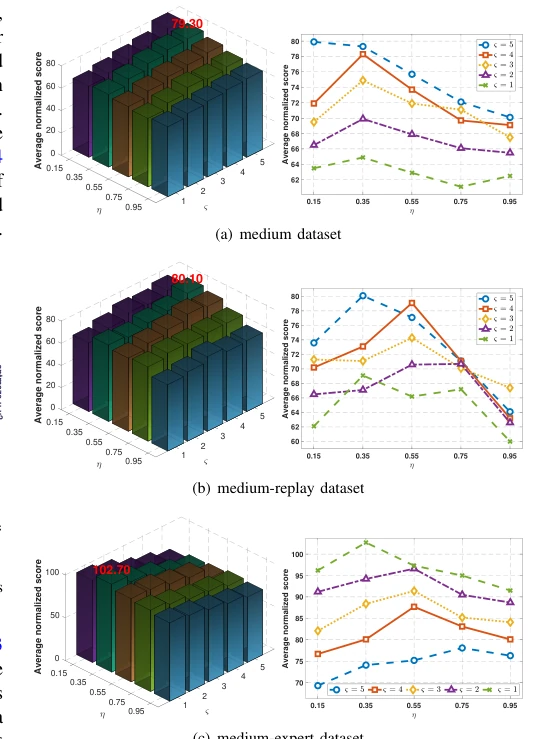
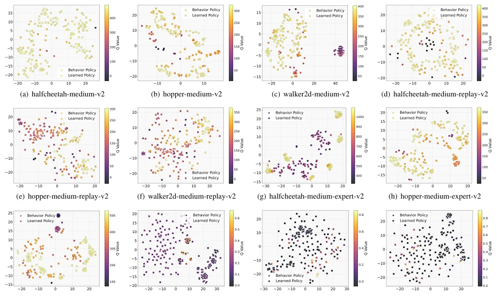
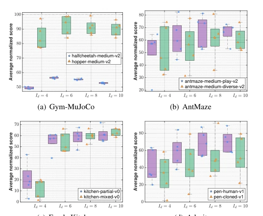
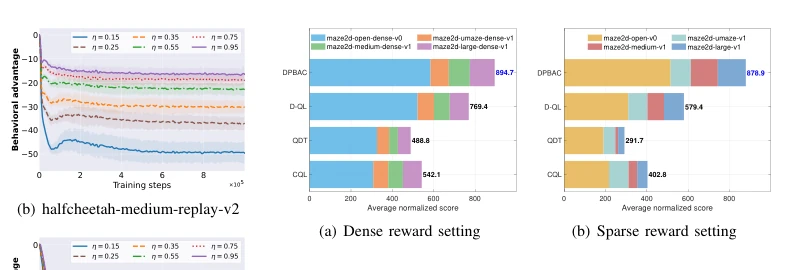
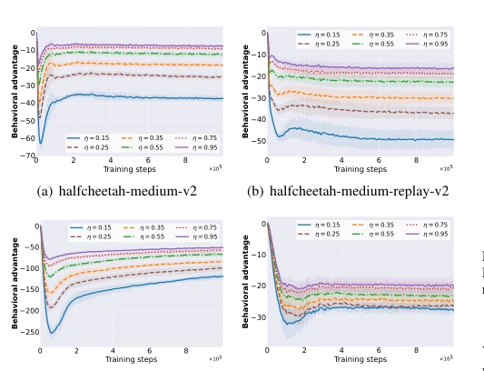

This paper prescribes a potent remedy for the "conservative disease" of Offline Reinforcement Learning (Offline RL). The authors keenly point out that existing conservative policies (such as CQL), in order to prevent overestimation, often overcorrect, dismissing actions that are actually promising but data-sparse outright, causing the policy to fail to learn genuine capabilities. The DPBAC algorithm attempts to use the Q-values of the behavior policy as an "adaptive ruler" to correct evaluation bias, preventing both overestimation and excessive pessimism; this idea is quite novel. However, stuffing a "generative" powerhouse like the Diffusion Model into the Offline RL framework, while solving the pain point of multimodal distribution modeling, likely incurs high training costs, and seems to have high sensitivity to hyperparameters (such as the correction coefficient η) (as seen in the ablation studies). Overall, this is a tightrope walk between theoretical rigor and engineering practicality; the results on D4RL are indeed impressive, but there may still be a gap of several GPUs between "perfect theoretical derivation" and "smooth practical deployment".
The core pain point of Offline Reinforcement Learning lies in Q-value estimation bias caused by Distribution Shift. Existing methods are mainly divided into two categories: Value Regularization and Policy Regularization. Value regularization methods (such as CQL [22], IQL [23], SCORE [24], SVR [25]) suppress overestimation by penalizing Out-of-Distribution (OOD) actions, but this "one-size-fits-all" pessimistic penalty often leads to excessive conservatism, failing to distinguish between "high-risk low-reward" and "high-reward but data-sparse" actions, thereby limiting the policy's improvement space [26]. On the other hand, policy regularization methods (such as BC [29], BCQ [31], DOGE [34]) prevent distribution shift by constraining the distribution distance between the policy and the behavior policy, but overly strict constraints directly inherit the suboptimality of the behavior policy, while overly loose constraints reintroduce OOD errors [36], [37]. Furthermore, traditional policy models (such as Gaussian distributions) struggle to accurately characterize complex multimodal behavior distributions, leading to regularization failure. Therefore, there is an urgent need for a mechanism that can both adaptively correct Q-value bias and accurately model complex behavior distributions.
The DPBAC algorithm's overall framework is divided into three core stages: Behavior Policy Modeling, Behavior Advantage Correction Policy Evaluation (BAC-PE), and Q-value Guided Policy Optimization. First, a Diffusion Model is used to model the behavior policy μ(·|s) of the pre-collected dataset, accurately capturing the multimodal distribution characteristics of actions in the dataset through forward noising and reverse denoising processes, generating high-fidelity behavior policy representations. Second, the BAC-PE mechanism is proposed, defining behavior advantage Aμ_Q = Qμ - Q, and introducing it into the modified Bellman operator. This operator uses the Q-values of the behavior policy as an adaptive reference to dynamically correct the learned Q-function, suppressing overestimation of OOD actions while avoiding excessive pessimism of traditional conservative methods. Theoretical analysis proves the convergence of this operator and the upper bound of Q-value estimation error. Finally, in the policy optimization stage, the diffusion policy network is combined with Q-value guidance. The loss function consists of diffusion policy loss (maintaining distribution consistency) and Q-value guidance loss (maximizing expected return), enabling the policy to explore high-reward regions while maintaining consistency with the data distribution, achieving performance improvements beyond the behavior policy.

Fig. 1. Schematic representation of the developed DPBAC algorithm.
Experiments are conducted on four domains of the D4RL benchmark test (Gym-MuJoCo, AntMaze, FrankaKitchen, Adroit), covering continuous control, sparse reward navigation, and complex manipulation tasks. Comparison baselines include value regularization (CQL, IQL, etc.), policy regularization (BC, BCQ, etc.), and diffusion policy methods (SRPO, DQL). Results show that DPBAC achieves SOTA performance in the vast majority of tasks, particularly with significant advantages in the data-sparse medium-replay dataset and the sparse-reward AntMaze task, proving the effectiveness of its Q-value correction mechanism. Ablation studies indicate that the correction coefficient η and regularization weight ς have a significant impact on performance, with an optimal interval existing. Additionally, t-SNE visualization confirms that the diffusion policy can generate superior action distributions while maintaining distribution consistency. Tests on sparse reward tasks also indicate that this method can effectively solve the long-horizon credit assignment problem.

Fig. 2. Representative task environments from the D4RL benchmark used for evaluation. (a) Gym-MuJoCo: halfcheetah. (b) Gym-MuJoCo: hopper. (c) Gym-MuJoCo: walker2d. (d) AntMaze: umaze. (e) AntMaze: medium. (f) AntMaze: large. (g) Adroit: pen. (h) FrankaKitchen: kitchen.

Fig. 3. Average normalized scores of DPBAC and SOTA baselines on Gym-MuJoCo, AntMaze, FrankaKitchen, and Adroit tasks. The central line and shaded region for each color represent the mean score curve and the standard deviation, respectively, of the corresponding algorithm across eight random seeds. m=medium, r=replay, e=expert, u=umaze, d=diverse, p=play, l=large.

Fig. 4. Radar chart visualization of the averaged normalized scores of various comparative algorithms across all evaluation tasks.

Fig. 5. Sensitivity test on the correction coefficient η and regularization weight ς in Gym-MuJoCo tasks. Results are reported across eight random seeds for η ∈{0.15, 0.35, 0.55, 0.75, 0.95} and ς ∈{1, 2, 3, 4, 5} on medium, medium-replay, and medium-expert datasets.

Fig. 7. Analysis of policy expressiveness and regularization ability: t-SNE visualization of state-action pair distributions from dataset D and those generated by the learned policy.
其他图片Other Figures

Fig. 6. Sensitivity test on the number of diffusion steps Id, with results averaged over eight random seeds for Id ∈{4, 6, 8, 10}.

Fig. 9. Test results of algorithm performance on sparse-reward tasks. Evaluations are conducted on Maze2D tasks under both dense and sparse reward settings, with results averaged over eight random seeds.

Fig. 8. Behavioral advantage curves of DPBAC over the full training process with varying η values.